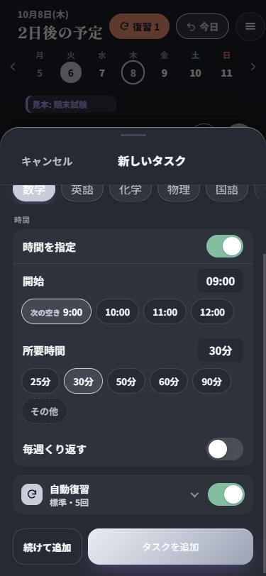
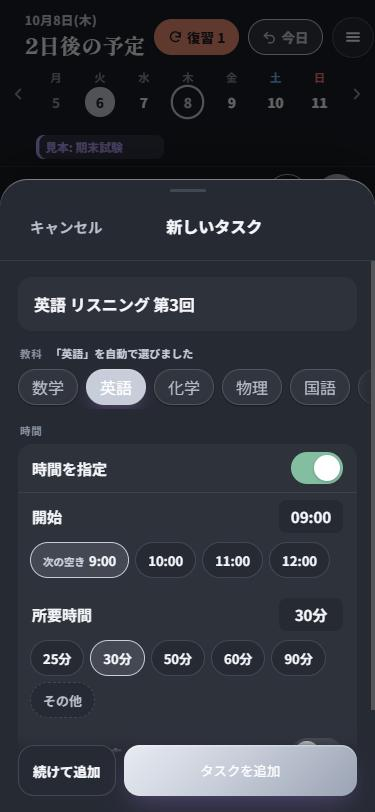
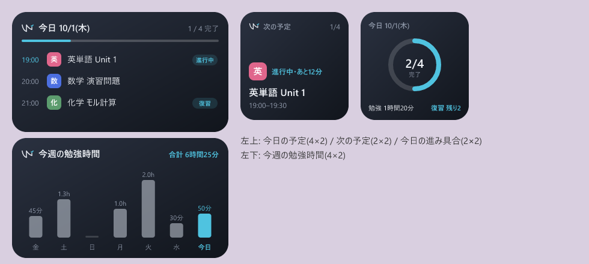

Timeline
1日の時間軸に、タスクを置いていく
まだ時間を決めていないタスクは上の「未設定」に。指でつまんで時間軸へドラッグすれば、その時刻の予定になります。
- 右へスワイプで完了、左へスワイプで未設定に戻す・削除
- ⚡の自動配置で、未設定のタスクを空き時間へまとめて並べる(間に5分の休憩)
- ▶で勉強時間を計測、右端のミニマップで1日を見渡す
Study planner for Android
StudySync は、勉強することを1日の時間軸に置いていく学習スケジュールのアプリです。終わったタスクには、忘却曲線にあわせて 1日後・3日後・1週間後…と復習が自動で入ります。
How it works
覚えたことは、時間がたつほど思い出しにくくなります(忘却曲線)。StudySync は、完了したタスクごとに「次はいつ復習すればよいか」を計算して、空いている時間に復習タスクを入れます。
覚え直しが必要。次の復習は翌日に入ります。
予定どおりの間隔(1・3・7・14・30日)で次の復習へ。
1回とばして、次の復習までの間隔を広げます。
Features
Timeline
まだ時間を決めていないタスクは上の「未設定」に。指でつまんで時間軸へドラッグすれば、その時刻の予定になります。
Quick add
タイトルを書けば教科を自動で選び、開始時刻は「次の空き」や、これまでの予定から読んだ「いつも」の時間を候補に出します。


Calendar
日曜はじまりの月表示に、タスク・予定・試験などのプロジェクトの期間をまとめて表示。土日と祝日は色で分かります。
Widgets
4種類のウィジェット。予定の開始・終了に合わせて自動で更新されます。

Googleでログインすると、ほかの端末とも同期します。
予定の開始前と、毎日決まった時刻のリマインダー。
週間・教科別の勉強時間、記憶の定着、これからの復習の件数。
期末試験などの期間を作ると、その日に合わせて復習のペースを決められます。
実際の画面でタップ・スワイプ・ドラッグを試せる使い方の案内。
端末の設定に合わせた見た目と、読みやすい文字の大きさ。
バージョン 1.15.4(Android 7.0 以上)。Google Play での公開を準備中のため、いまはAPKファイルで配布しています。
Changelog